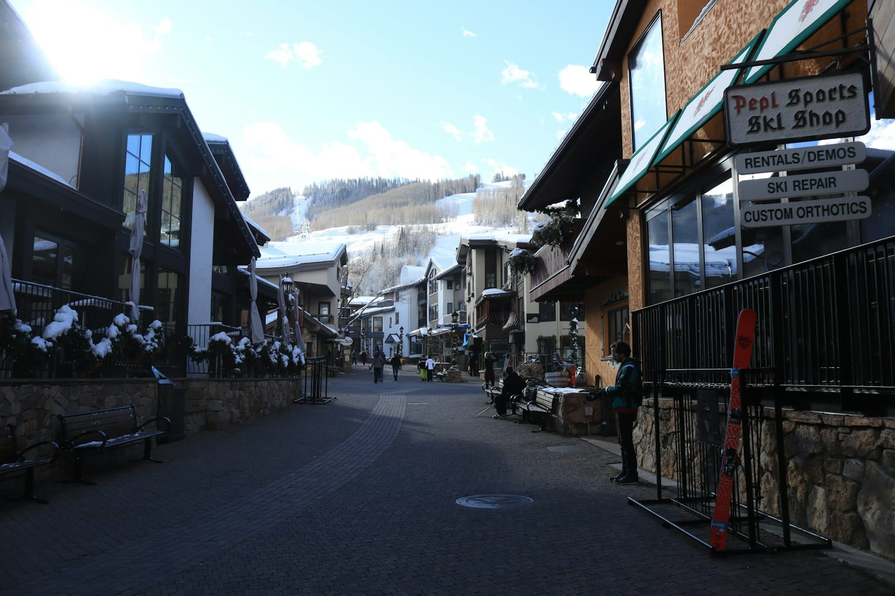

CORPORATE
Corporate retreat evening ideas in Vail
The daytime schedule at a retreat is often the easy part to plan. Here are eight ideas for your evenings in Vail and the valley, along with some planner notes to help you work out which ones fit your venue.

- The evenings are often the last part of a retreat to get planned, so they're worth some extra thought.
- Each evening idea comes with the size of act we'd suggest for it.
- Vail has an outdoor sound limit that can affect the later part of the evening, so check the current number with your venue.
- A cover or jazz band for a corporate event can run $2,500 to $8,000 across Colorado, and a jazz trio or acoustic duo for a dinner can run $500 to $3,000.
Anyone who's been on a company retreat knows that the best conversations tend to happen after the meetings end, often over dinner.
Vail is an especially good place for that kind of evening. Vail Village is small enough that your group can walk to the same places, the mountain views are lovely, and many of the venues are set up for groups.
The welcome reception #
On the first evening, the main goal is to get people talking before the program starts. People may arrive at different times, some of them may never have met in person, and that first hour of standing around with a drink can be the hardest part of the whole retreat to get right.
Live music can really help, because it gives everyone a reason to gather in one place, and it takes the pressure off while people get to know each other. A duo is usually the right size, since people can still hear each other without raising their voices. With a bigger act, it can get harder for people to introduce themselves.
The seated dinner with live music #
At a seated dinner, the musicians can keep the music under the conversation all night and stop whenever somebody stands up to speak. A dinner like this can feel really special without any big production, and in our experience, it's the evening many retreats underspend on.
Classic jazz standards on upright bass and guitar are a popular choice. Our jazz duo can play for an hour around a toast or all the way through dinner, whichever you'd like.
The awards night #
If your retreat includes awards or recognition, you'll probably plan the evening around a program, and live music can help keep things moving from one part to the next. A band can play people in, fill the gaps while the next presenter walks up, and take over once the last award is handed out.
You'll also want an announcement microphone for the presenters. Learn more about how this works in our post on playing around a program.
The off-site dinner up the mountain #
A dinner up the mountain is a Vail classic. You'll ride a gondola or a snowcat to a cabin restaurant at altitude, and the ride itself can be half the fun. It's also the hardest load-in on this list, because everything you need for the evening goes up the same way your guests do.
That limits the music to what two people can carry, so you'll likely want a solo musician or a duo with a compact setup. Ask the venue what fits in the cabin and what time the last ride down is, then plan the evening around those two answers.
The flamenco trio performance #
If you want something your group may never have seen at a company event, a flamenco performance is a great choice. The one we book most often is a flamenco trio playing traditional styles, and we can add a dancer if you'd like a floor show.
It fits nicely into a dinner or a reception as one part of the evening. The group to call for this is Dirty Flamenco.
The closing night with dancing #
The last evening is a great time for letting loose, so you'll want a dance floor. A quartet is a good size for a ballroom, since it can play quietly through dinner and then turn it up when the program ends.
To avoid two load-ins and two vendors, you can book one act that grows over the course of the evening. Tejas Singh can play as a duo through arrivals and dinner and become a quartet when the dancing starts. It's the same singer and the same songs on one contract, so it sounds like one band getting bigger.
The DJ after the band #
A retreat crowd will often want to keep going after the band finishes, since nobody has to drive anywhere and the hotel may be right upstairs. We can cover that with a DJ on the same sound system, so there's no second load-in.
The free evening in Vail #
Three planned nights in a row can be a lot, and many experienced retreat planners will tell you the same. You can leave one evening open, let people know it’s free, and send them out to enjoy the village. A night off gives everyone a break, and in our experience, the closing dinner is better for it.
| The evening | The music to book | What you'll need from the venue |
|---|---|---|
| The welcome reception | A duo, at a volume people can talk over | A corner and its own power source |
| The seated dinner with live music | Jazz duo or trio | A private dining space |
| The awards night | Duo to quartet, plus an announcement mic | A sound plan for your program |
| The off-site dinner up the mountain | Solo or compact duo | A ride up, and a ride down for the gear |
| The flamenco trio performance | Flamenco trio, dancer optional | A clear view for guests and a hard floor |
| The closing night with dancing | Quartet | 14 by 10 ft and two separate power sources |
| The DJ after the band | A DJ on the same sound system | The venue's curfew |
| The free evening in Vail | Nothing | Nothing |
Planner notes for a Vail retreat #
Four things about the mountains can change what’s possible, so it’s worth talking them through with your venue.
Altitude. Vail Village sits at 8,150 feet. Singers and horn players may need to pace themselves in the thin, dry air, and the temperature can change enough between sound check and the last set to pull instruments out of tune, so it helps to plan a longer sound check into the run of show. Breckenridge, at 9,600 feet, is even higher, so all of this applies there even more.
Sound limits. Vail’s outdoor limit in the resort villages was reported at 65 dBA measured ten feet from the permitted area, and the town was reviewing its rules as outdoor programming grew, so confirm the current number with the venue. A dinner set can sit at 60 to 65 dBA at the nearest table, so the limit mostly matters for the louder, later part of the evening.
Load-in. The village cores are pedestrian-only. Cars have to stop at the parking structures, hotels receive vendors at their loading docks at scheduled times, and gear moves by freight elevator. We’ll work out the dock time, the elevator time and the route to your event space with the venue ahead of time.
Travel. For a date in the mountains, our musicians have a drive on a mountain highway in whatever weather comes and a longer day than at a Denver event, and they sometimes need a night’s lodging.
Want the details for other mountain towns? Check out our mountain page.
Where to hold a Colorado mountain retreat #
Most mountain retreats we see go to one of four towns, and each one is a little different to plan.
Vail is a popular choice for incentive trips and leadership offsites, and its village hotels can host a general session by day and a dinner by night. Beaver Creek is a terraced village where gear has to reach some venues over snow, and it's a great spot for on-mountain dinners. Aspen is at the far end of the mountain corridor, so travel and lodging are part of the decision. Breckenridge has a historic district, and it's the town most likely to have your whole group in one building.
Want to know how we work with resort venues? Take a look at our corporate retreats page.
This price comes from published 2026 market guides that we read in September 2026. We quote each date one-by-one.
Our artists have played for Amazon, NBCUniversal, Charles Schwab, Kroger, the Denver Art Museum, Sheraton, Hyatt, the Washington Nationals, Casa Bonita and Monarch Casino Resort Spa Black Hawk. Curious what live music costs across Colorado? Check out our cost guide. If your venue would like to see stage sizes, power and input lists, you can share our technical page with them.